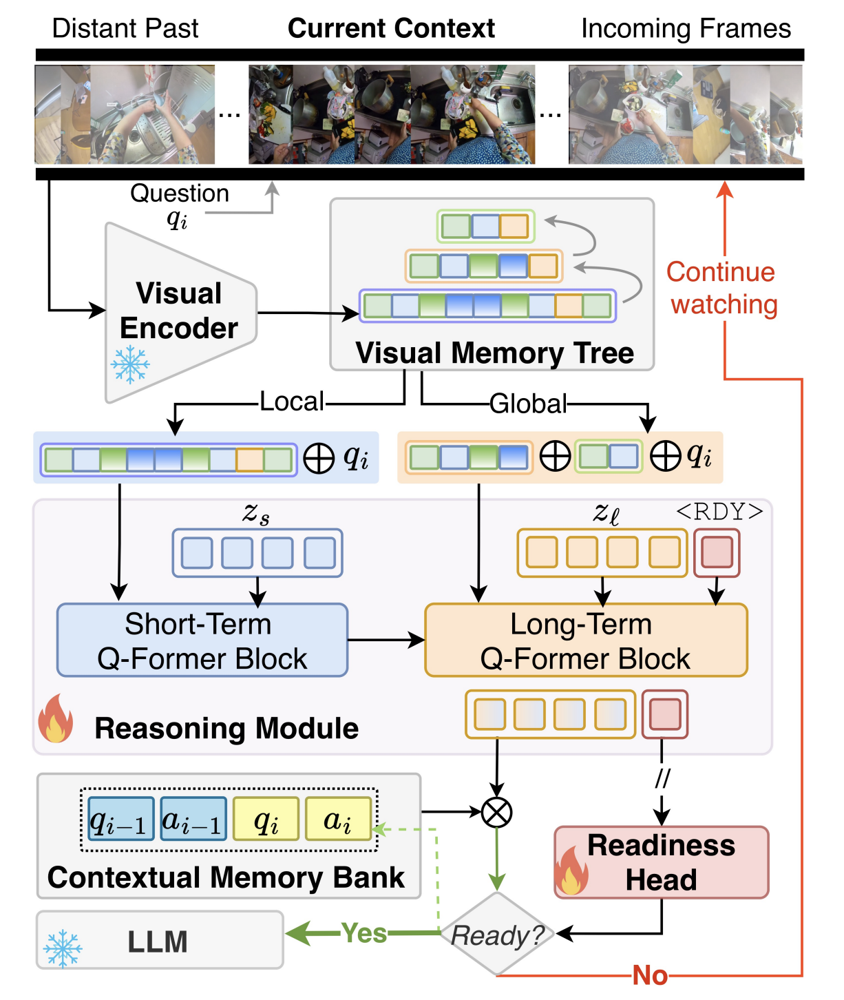

Streaming video understanding often involves time-sensitive scenarios where models need to answer exactly when the supporting visual evidence appears: answering before the evidence reflects speculation, answering after it has passed reduces real-time utility. To capture this behavior, we introduce a readiness-aware formulation of streaming video understanding with the Answer Readiness Score (ARS), a timing-aware objective with asymmetric early and late penalties. When combined with correctness, ARS defines an effective accuracy that measures not just whether a model is right, but whether it answers at the appropriate moment. Building on this formulation, we introduce StreamReady, a framework to unify temporal reasoning with on-time answering through a lightweight readiness mechanism that decides if sufficient evidence has been observed before responding. To evaluate this capability, we further introduce ProReady-QA, a benchmark with annotated answer evidence windows and proactive multi-turn questions across local and global contexts. StreamReady achieves superior performance on ProReady-QA, and consistently outperforms prior methods across eight additional streaming and offline long-video benchmarks, demonstrating robust and broadly generalizable video understanding capability

Framework Overview. StreamReady encodes streaming videos into a visual memory tree and reasons through short and long-term branches. A learnable@inproceedings{azad2026streamready,
title={Streamready: Learning what to answer and when in long streaming videos},
author={Azad, Shehreen and Vineet, Vibhav and Rawat, Yogesh S},
booktitle={Proceedings of the IEEE/CVF Conference on Computer Vision and Pattern Recognition},
pages={40494--40504},
year={2026}
}